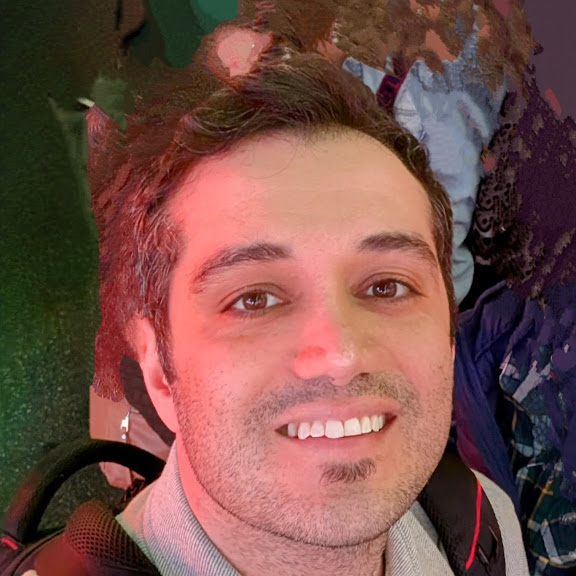

AI research scientist, Meta
I work on multitask models for sensory data at Meta, and I write the tutorials I wish existed: every equation read aloud, every idea with a toy you can play with.
New York City · ramin.audio@gmail.com

28 deep dives, each with interactive toys. Pick a category to browse its tutorials.
The classics that still run the world. How much can you learn without a single GPU?
CNNs, RNNs, loss functions, scaling. What does a kernel actually see?
No labels, no dataset, just a scoreboard. How does anything learn to win?
Attention is weighted averaging. So why does the bill come out quadratic?
Half the bits, same model. Which weights can you cut and get away with it?
If analog is a ramp, ADC is a staircase. Where do the ghosts come from?
One model, many tasks. When the tasks fight, whose gradient wins?
I studied at the University of Illinois at Urbana-Champaign and started in audio ML, interning at several industries, including the Advanced Digital Sciences Center in Singapore and Adobe. I later joined Dolby Labs, working on deep learning and audio codecs. Later, as the first hire at CurieAI, I helped develop models that detect respiratory symptoms from noisy audio, scaling the technology to hundreds of patients.
Looking to push myself into unfamiliar territory, I pivoted to NLP. At UnitedHealth Group, I was again the first ML lead on the team. I built natural language search for health benefits that became the foundation for an enterprise-wide semantic search platform. As the ML lead for the enterprise team, I trained language models from scratch, scaled the team to over 50 people, and reshaped how ML was applied to search through my experiences with sensory signals.
At Precision Neuroscience, I applied cutting-edge signal processing and machine learning to brain-computer interfaces. Basically, translating brain signals into real-time actions. Currently, I work at Meta as an AI research scientist on multitask models for sensory data.
University of Illinois at Urbana-Champaign
M.S. & B.S., Electrical & Computer Engineering
GPA: 3.97/4.0 (M.S.), 3.86/4.0 (B.S.)
08/2011 - 12/2016